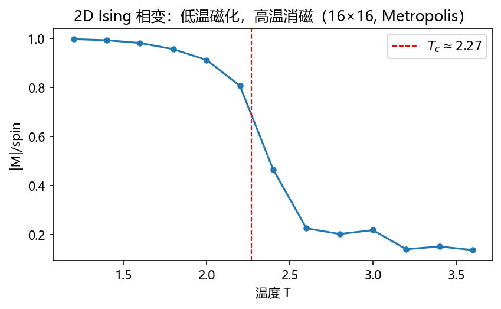

第 5 章 马尔科夫链蒙特卡罗#
本章解决：第 4 章的抽样方法都要求"能直接从目标分布抽"——逆 CDF 要显式分布函数、舍选法要能构造包络。当目标分布只能算出未归一化的相对值（贝叶斯后验、统计力学的 Boltzmann 分布、巨大的组合状态空间）时，这些方法全部失效。MCMC 的解法只有一句话：构造一条马尔科夫链，让它的平稳分布恰好是目标分布——链走足够久之后，样本就来自目标分布。本章给出这条路线的全部要件：离散链与平稳分布（S&M §3.1）、Metropolis 算法与细致平衡证明（§3.2）、遍历定理（§3.3）、Boltzmann 分布的来历（§3.4）、Ising 模型相变（§3.5）、非对称提议的 Hastings 校正（§3.6）、计数与精确采样（§3.7–3.8）。 对照教材：Shonkwiler & Mendivil《Explorations in Monte Carlo Methods》Chapter 3（本章主线，小节划分跟随它）；Dunn & Shultis《Exploring Monte Carlo Methods》§6.1 补充（burn-in 的讨论、提议分布的调节经验、Gibbs 抽样预告）。
| 关键词 | 事实 |
|---|---|
| 马尔科夫性 | 下一状态只依赖当前状态，与更早历史无关 |
| 转移矩阵 | 行和为 1；\(p_{t+1}=p_tP\)，\(p_t=p_0P^t\) |
| 平稳分布 | \(\pi P=\pi\)；不可约 + 非周期 ⇒ 唯一且 \(p_t\to\pi\) |
| Metropolis 接受率 | \(h=\min(1,\,f(y)/f(x))\)；只用 \(f\) 的相对值 |
| 细致平衡 | \(\pi(x)p_{xy}=\pi(y)p_{yx}\)；逐对概率流平衡 ⇒ 平稳 |
| 遍历定理 | 时间平均 \(\frac1N\sum r(X_i)\to\mathbb E_\pi(r)\)；相关样本也能算期望 |
| Boltzmann 分布 | \(f(x)=e^{-E(x)/k_BT}/Z\)；\(Z\) 归一但 Metropolis 不需要它 |
| Ising 相变 | 低于临界温度磁化（双峰），高于则消磁；\(T_c\approx2.269\)（2D） |
| Hastings 校正 | 非对称提议乘 (q(x |
| burn-in | 链早期未达平稳，统计要丢弃前段 |
本章代码：nb/ch05.ipynb（5 个实验，随机种子 2024；结果图均标注"代码实跑"）。承上启下：本章的链式抽样是第 8 章（贝叶斯后验的 MCMC 计算）与第 9 章（MCMC 求积）的引擎；§5.5 末尾的"退火"概念在第 7 章长成优化算法。
5.0 本章导图#
5.1 离散马尔科夫链#
5.1.1 定义与图表示#
单次概率实验推广为一串实验：\(t=0,1,2,\dots\) 每步从状态 \(X_{t-1}\) 走到 \(X_t\)。"马尔科夫"的关键是只看现在，不看历史——从状态 \(x\) 出发的下一步只依赖 \(x\)。通常从 \(x\) 只能走到 \(\Omega\) 的一小部分，称为 \(x\) 的邻域（neighborhood）\(N_x\)；每条有向边 \(x\to y\) 带一个转移概率 \(p_{xy}\)，行和必须为 1：
链可以画成图：状态是顶点、转移是有向边（S&M 图 3.1 的四状态例）。本章只处理时齐（time invariant）链——转移概率不随 \(t\) 变。
5.1.2 一个可以手算的小链：股票市场#
S&M 的股票模型：昨天 up / same / down 三种状态，今天的条件概率为——昨天 up 则今天 up 0.3、same 0.2、down 0.5；昨天 same 则 0.4/0.3/0.3；昨天 down 则 0.3/0.4/0.3。模拟单条链：按当前状态的行做轮盘选择（第 4 章的方法）即可走链；研究分布则用矩阵。转移矩阵
其中 \(p_t\) 是 \(X_t\) 的概率向量（行向量）。从 \(p_0=[1\ 0\ 0]\)（确定性从 up 开始）出发：
分布迅速稳定下来——这不是巧合，而是正则马尔科夫链的普遍性质：存在不变分布（invariant distribution）\(\pi\) 满足
且 \(p_t\to\pi\)。用 \(\pi P=\pi\) 解股票链，得精确值

5.1.3 平稳分布存在的两个条件#
S&M（借助附录 B 的 Perron–Frobenius 定理）指出，\(P\) 满足两条"正则"条件时不变分布唯一且 \(p_t\to\pi\)：
- 不可约（irreducible）：图上从任何顶点出发都能到达任何其他顶点。若图分裂成几个连通块，各自有自己的平稳分布，没有全空间唯一的 \(\pi\)。
- 非周期（aperiodic）：不存在 \(d>1\) 使得"回到出发点的步数都是 \(d\) 的倍数"。违反则 \(p_t\) 来回振荡不收敛——S&M 图 3.3 的三态链（1⇄2⇄3，1 与 3 都只能去 2）中，回到自己的步数全是偶数，就是周期 \(d=2\) 的反例。
这两条在 §5.2 里还会重逢：Metropolis 链自动满足非周期（总有可能原地不动），只需保证提议过程不可约。
拓展：收敛速率由谱隙决定
实验测得股票链误差按几何速率下降，速率恰为 \(P\) 的次特征值模长 \(\lambda_2=0.1414\)。谱隙 \(1-\lambda_2\) 越大混合越快——这是判断 MCMC"烧多久才算烧透"的理论依据（D&S §6.1.3 会讨论 burn-in 的神话）。
5.2 Metropolis 算法#
5.2.1 从舍选法到链#
MCMC 的想法来自 1953 年 Metropolis 等人的论文"Equations of state calculations by fast computing machines"（研究原子分子随机运动的物理问题）——该算法后来被评为对科学与工程影响最大的十大算法之一。
第 4 章舍选法的结构是"提议 \(y\sim g\)、以 \(h(y)\) 接受"。Metropolis 把它改成链式：提议可以依赖当前状态（每个 \(x\) 有自己的提议密度 \(g_x\)），接受也可以依赖当前状态。这带来巨大的新自由度，代价是样本之间相关。对提议的唯一硬性要求是对称：
即"从 \(x\) 提议 \(y\)"与"从 \(y\) 提议 \(x\)"等可能（最常用：随机游走 \(y=x+\varepsilon\)，\(\varepsilon\) 对称）。接受率为
\(f\) 只需要相对值——比当前点概率高的提议必收，比当前点低的按比值概率收。算法骨架：
5.2.2 三个例子（S&M §3.2.1）#
骰子（最小邻域）。状态 {2,…,12}，目标是两骰子之和的分布。提议只走 \(x\pm1\)（端点自环）——样本强相关（从 5 只能先到 4 或 6），但跑足够久后频率与理论完全吻合：实验 2 的 20 万步最大频率偏差 0.004，各点频率与 \(\binom{n}{x}/36\) 逐一对上。

提议切换。最小邻域在多峰目标上会"卡"在某峰附近（实验 3 的 \(\sigma=0.5\) 就是这个症状），最大邻域（任何状态都可能被提议）则探索浅。S&M 的倒数平方骰子例演示了实用折衷：90% 的时间用最小邻域、10% 的时间切到最大邻域——两全其美。
连续链。状态空间 \([0,\infty)\) 时取 \(g_x\) 为 \([x-1,x+1]\) 上的均匀密度（对称），提议 \(y<0\) 直接拒绝（留在 \(x\)）——对称性没破坏，端点效应交给接受率处理。S&M 用 \(f(x)=0.5x^2e^{-x}\)（gamma 形状）演示，2 万样本直方图与目标吻合（其图 3.6）。
拓展：步长的经验法则（D&S §6.1.4）
随机游走提议的 \(\sigma\) 要和目标的"宽度"匹配。太小时每步移动小、相邻样本高度相关、多峰目标会卡在单峰（实验 3：\(\sigma=0.5\) 时每千步过零 0.2 次）；太大时拒绝率高、长时间原地踏步。经验上把接受率调到 20%–50% 附近效率较好；更好的做法是多尺度提议混合（即"提议切换"）。
5.3 为什么有效：细致平衡与遍历定理#
5.3.1 概率质量流动图像#
把 \(\pi\) 看成一单位"沙子"铺在各状态上。每一步，状态 \(x\) 的沙子按比例 \(p_{xy}\) 流向邻居 \(y\)，同时从邻居流入。"平衡"就是每个状态流入 = 流出：
右边用了行和为 1——这正是 \(\pi P=\pi\) 的第 \(x\) 列。更强的逐对条件：若每一对状态之间的流量两两平衡，
这叫细致平衡（detailed balance），则整体平衡自动成立（对所有 \(y\) 求和即得）。满足细致平衡的链也叫可逆（reversible）链——平稳时任何路径与其反向路径概率相同。
5.3.2 验证 Metropolis 链满足细致平衡#
Metropolis 的转移概率是"提议且接受"的乘积：\(p_{xy}=g_x(y)\,h(x,y)\)。要证 \(\pi=f\)（目标分布）满足细致平衡，即
不妨设 \(f(y)>f(x)\)。则 \(h(x,y)=\min(1,f(y)/f(x))=1\)，而 \(h(y,x)=\min(1,f(x)/f(y))=f(x)/f(y)\)。代回：
由提议的对称性 \(g_x(y)=g_y(x)\)，两边相等。细致平衡成立；再配上行和为 1、提议不可约（保证链不可约）与"总有机会原地不动"（保证非周期），链收敛到 \(f\)。这就是 Metropolis 算法的全部合法性证明——两行代数。
5.3.3 遍历定理：相关样本也能算期望#
链收敛到 \(\pi\) 只保证"等久了能抽到一条样本"。MCMC 的实际用途是算期望，需要一整批样本——而链样本天然相关，不能直接套第 2 章的 \(\sigma^2/N\)。救场的是：
遍历定理（S&M 定理 3.1）：不可约、非周期的马尔科夫链，平稳分布 \(\pi\)，则对任意函数 \(r\)，
证明思想与大数定律同源：\(\frac{n_j}{N}\)（状态 \(y_j\) 被访问的频率）趋于 \(\pi(j)\)，于是时间平均趋于期望。时间平均换成空间平均——MCMC 算期望的合法性证书。注意：样本相关意味着误差棒要用第 4 章的 batching 方法估算（把链切成段、段均值当独立样本），直接用 \(\sigma/\sqrt N\) 会低估误差。
5.4 统计力学：Boltzmann 分布从哪来#
Metropolis 算法诞生于统计力学，其"接受率里的指数"（Boltzmann 因子）在本节从第一性原理推出来。赶时间的读者可跳过本节不影响后续，但它解释了 §5.5 Ising 模型里 \(e^{-\Delta E/T}\) 的来历。
5.4.1 相空间与其惊人的尺度#
统计力学研究有天文数字个微观态的系统。微观态 \(x\) 是系统的完整刻画（粒子位置、动量、自旋……），全部微观态构成相空间 \(\Omega\)。最简单的系统是 Ising 模型：\(N\) 个格点、每点自旋 \(\pm1\)——它就是磁材料的玩具模型（电子自旋成对抵消，未配对电子的宏观集体行为就是磁性）。
宏观性质是微观态的聚合量（磁矩 = 自旋净和）。关键问题是：为什么我们从没见过房间里所有空气自发挤到一个角落？把相空间按宏观性质分区计数：一个粒子待在 1/10 体积角落的概率是 1/10；\(10^{25}\) 个粒子全在角落的概率
就算每秒采样 \(10^9\) 个微观态、采到宇宙年龄（\(10^{18}\) 秒）也只碰过 \(10^{27}\) 个态——杯水车薪。Ising 侧同样惊人：\(100\times100\) 格点的相空间有 \(2^{10000}\approx10^{3010}\) 个态，而磁矩为零的态有 \(\binom{N}{N/2}\approx 2^N\sqrt{2/(\pi N)}\) 个（这个组合数近似可由第 2 章的 CLT 对二项分布推出，S&M 式 3.15；Stirling 公式给出同样结果）——"乱"的态比"整齐"的态多出天文倍数。
5.4.2 熵、温度与 Boltzmann 因子#
熵定义为 \(S=k_B\log n\)（\(n\) 为宏观态对应的微观态数）。热力学系统的观察结论：系统趋向熵最大的宏观态。两个系统接触、只交换能量时，\(S=S_1+S_2\)（对数可加）、\(E=E_1+E_2\)。能量怎么分？最大化 \(S_1(E_1)+S_2(E-E_1)\) 得
平衡时 \(T_1=T_2\)——温度就是熵对能量的斜率的倒数。
小系统 1 与大热浴 2 接触时，把 \(S_2(E-E_1)\) Taylor 展开（高阶项可忽略）：
由 \(S_2=k_B\log N_2\)（\(N_2\) 是热浴微观态数），宏观态 \(M\) 出现的概率正比于 \(N_2\)：
最后一个因子 \(e^{-E/(k_BT)}\) 就是 Boltzmann 因子：低温时低能量态压倒性地更可能；温度越高能量差别越不重要。归一化后得到 Boltzmann 分布
\(Z\) 称为配分函数（partition function）。宏观量 \(\langle M\rangle\) 就是在这个分布下取期望（热平均）。
拓展：为什么配分函数算不动、又为什么不需要算
\(Z\) 要对全部微观态求和——\(2^{10000}\) 个态，任何计算机都加不完。但下一节会看到：Metropolis 的接受率是两个 Boltzmann 密度的比值，\(Z\) 在分子分母里直接消掉。MCMC 的巨大价值正在于此：从只知相对值的分布里抽样。第 8 章的贝叶斯后验（分母同样算不出）是同一件事的统计学版本。
5.5 Ising 模型与相变#
5.5.1 模型与接受率#
格点 \(\Lambda\) 上每个自旋 \(x_i=\pm1\)，一条微观态就是全体自旋的一种配置。能量（S&M 式 3.26）
相邻自旋同向降低能量（铁磁相互作用）。磁矩 \(M(x)=\sum_i x_i\)。记 \(\beta=1/(k_BT)\)，Metropolis 接受率特化为
配分函数 \(Z\) 已消掉。实现要点：提议 = 翻转一个随机选中的自旋（对称），能量差只需看 4 个邻居（周期边界；自由边界则边界点邻居更少）。初始配置随便给——链要烧一段（burn-in）才进入平稳分布，统计从烧完之后才开始记，烧多久靠实验判断。
5.5.2 一个手算的 2×2 例（S&M §3.5）#
自由边界的 2×2 格点共 16 个微观态，可以逐个算 Boltzmann 概率：高温 \(T=100\)（\(\beta=0.01\)）时 \(Z=16.004\)，各态几乎等概率；低温 \(T=1\)（\(\beta=1\)）时 \(Z=121.22\)，全同向态（能量 \(-4\)）各占约 45%，错排态几乎绝迹。磁矩分布从高温的钟形（正负自旋大致对半）变成低温的双峰（全 up 或全 down）。
5.5.3 相变、居里点与退火#
温度扫描时磁矩在临界温度附近陡降——系统经历相变（phase change），临界点称居里点（2D Ising 精确值 \(T_c=2/\ln(1+\sqrt2)\approx2.269\)）。实验 5 用 16×16 格点的 Metropolis 扫温复现：\(T\le2.2\) 时 \(|M|/\text{spin}>0.8\)，\(T\ge2.6\) 时 \(|M|/\text{spin}<0.23\)，拐点与理论吻合。

还有一个直接连接第 7 章的观察：温度骤降时系统会锁进自旋畴交错的亚稳态（metastable，S&M 图 3.8 的 16×16 岛屿图样）；只有足够慢地降温让畴壁长大合并，系统才能到达全局能量最低的全同向态——这个过程叫退火（annealing）。把"能量"换成"目标函数"、把格点换成解空间，就是第 7 章的模拟退火。
5.6 Metropolis–Hastings：放开对称性#
对称提议有时不方便（比如非对称的独立提议、方向性走步）。Hastings 的推广把提议过程纳入接受率：仍要求 \(g_x(y)\neq0\iff g_y(x)\neq0\)（但不必相等），取
推导与 §5.3.2 完全平行：设 \(f(y)g_y(x)>f(x)g_x(y)\)，则 \(h(x,y)=1\)，\(h(y,x)=\frac{f(x)g_x(y)}{f(y)g_y(x)}\)，细致平衡两边同为 \(f(x)g_x(y)\)。多出来的因子 \(q(x|x')/q(x'|x)\) 是对提议偏置的补偿。
实验 4 演示了忘掉校正的代价：目标半正态（均值 \(\sqrt{2/\pi}\approx0.798\)），提议 \(x'\sim Exp(1)\)（独立、非对称：\(q(x'|x)=e^{-x'}\) 而 \(q(x|x')=e^{-x}\)）。正确 MH 给出 \(0.7994\)（理论 0.7979，接受率 84%）；忘掉 \(q\) 比值后均值偏到 \(0.5269\)——系统性偏差，不是噪声。

5.7 计数与精确采样（S&M §3.7–3.8 概要）#
5.7.1 数羊范式与单体-二聚体计数#
估计巨大状态空间的大小可以用抽样：设想牧羊人靠"黑羊比例 \(s\)"估算羊群总数（总数 ≈ 黑羊数 / \(s\)）。MCMC 版本：在格点图的匹配（matching，两两不共端点的边集）空间上构造均匀采样链（\(f=1\)，永远接受；提议"随机选一条边，删/加/换"是对称的），已知 \(|\mathcal M_1|=\) 边数，于是 \(|\mathcal M_k|=|\mathcal M_1|\times\dfrac{\text{命中 }k\text{ 的频率}}{\text{命中 1 的频率}}\) 逐级估出。S&M 用 14 条边的图以 99 万步估出各级匹配数（其表 3.1），与可手算的小规模值吻合。分母是配分函数的计数问题，MCMC 绕过了它。
5.7.2 约束洗牌#
桥牌未知牌的随机分配（带花色约束）：目标是全部合法分配上的均匀分布（\(f=1\)、永远接受），提议 = 从三手牌中各取一张、按随机顺序尝试交换并保持合法性。这是"把部分信息博弈转成随机全信息博弈"的标准招法（S&M §3.8.1）。
5.7.3 从过去耦合（coupling from the past）#
普通 MCMC 的样本来自"近似平稳"的链。Propp–Wilson 的精确采样反着跑时间：预先固定随机数序列 \(r_{-1},r_{-2},\dots\)，从所有状态同时出发向前走；若到 \(t=0\) 所有轨迹合并成一个状态，这个状态就是精确的平稳分布样本；未耦合则回到更远的过去（且保留同一随机数序列）。S&M 用股票链演示：随机数 \(\{0.31,0.57,0.97,0.85\}\) 下三态轨迹在第 2 步耦合到 U。两个注意点：耦合后不能提前停止重试（会引入偏差，S&M 的 \(P'\) 例）；固定步数重试也会低估极端状态（\(P''\) 例）——必须"回到足够远的过去"这一条纪律。
坑与陷阱#
把相关样本当独立样本算误差
链样本自带相关性，\(\sigma/\sqrt N\) 会严重低估误差。用 batching：切大段、段均值当独立样本、按第 4 章的 \(t\) 区间报误差。
不烧链就开始统计
初始点大概率不在平稳分布附近。烧掉前段（burn-in），并用不同初点重复验证结果一致。
多峰目标 + 小步长
小步长链会在一个峰里困几万步（实验 3 的 \(\sigma=0.5\)）。用大步长、多尺度提议混合，或确认过零次数足够。
忘掉 Hastings 校正
非对称提议下忘掉 \(q\) 比值不是"效率低一点"，是收敛到错误的分布（实验 4：均值 0.527 vs 0.798）。
对接受率追逐 100%
接受率过高 = 步长太小 = 混合慢。把接受率压到 20%–50% 区间通常更高效。
用未收敛的链做计数
数羊范式要求链在整个空间混合均匀；卡在子空间的比例估计会全错。先验证链能访问全部状态类。
从过去耦合提前停
耦合成功就停、失败就换新随机数重试固定次数——两种"优化"都引入偏差。必须保留随机数序列、回到足够远的过去。
速览#
- 马尔科夫链：下一状态只依赖当前状态；转移矩阵行和为 1。
- \(p_{t+1}=p_tP\)，\(p_t=p_0P^t\)；不可约 + 非周期 ⇒ 唯一平稳分布 \(\pi\) 且 \(p_t\to\pi\)。
- 收敛速率由次特征值（谱隙）控制。
- Metropolis：对称提议 + 接受率 \(\min(1,f(y)/f(x))\)，只需要 \(f\) 的相对值。
- 细致平衡 \(\pi(x)p_{xy}=\pi(y)p_{yx}\) 逐对验证，两行代数。
- 遍历定理：时间平均收敛到空间平均，相关样本也能算期望。
- 熵最大化推出 Boltzmann 因子 \(e^{-E/k_BT}\)；配分函数 \(Z\) 在接受率比值中消掉。
- Ising：单点翻转提议，\(\min(1,e^{-\Delta E/T})\)；2D 临界温度 \(\approx2.269\)，低温磁化、高温消磁。
- Hastings：非对称提议乘 \(q(x|x')/q(x'|x)\)；忘掉则收敛到错误分布。
- 慢降温的 Ising = 模拟退火的物理原型（第 7 章）；数羊范式 = 用已知计数 + 频率比估未知计数。
术语速查#
| 英文 | 中文 | 一句话 |
|---|---|---|
| Markov chain | 马尔科夫链 | 无记忆的随机状态序列 |
| neighborhood | 邻域 | 一步之内可达的状态集合 \(N_x\) |
| transition matrix | 转移矩阵 | \(P=(p_{xy})\)，行随机 |
| state probability vector | 状态概率向量 | \(p_t\)，\(X_t\) 的分布，行向量 |
| invariant distribution | 不变分布 | \(\pi P=\pi\) 的概率向量 |
| irreducible / aperiodic | 不可约 / 非周期 | 链正则的两个条件，保证收敛唯一 |
| detailed balance | 细致平衡 | 逐对概率流平衡；可逆性 |
| reversible | 可逆 | 平稳时正逆路径同概率 |
| Metropolis algorithm | Metropolis 算法 | 对称提议 + \(\min(1,f(y)/f(x))\) 接受 |
| Metropolis–Hastings | MH 算法 | 非对称提议乘 \(q\) 比值校正 |
| proposal distribution | 提议分布 | \(g_x(\cdot)\)，按当前状态选的候选生成器 |
| burn-in | 预烧期 | 链未达平稳的前段，统计要丢弃 |
| ergodic theorem | 遍历定理 | 时间平均 → 平稳分布下的期望 |
| microstate / phase space | 微观态 / 相空间 | 系统完整刻画 / 全部微观态 |
| entropy | 熵 | \(S=k_B\log n\) |
| Boltzmann factor | 玻尔兹曼因子 | \(e^{-E/k_BT}\) |
| partition function | 配分函数 | \(Z=\sum e^{-E/k_BT}\)，在 MH 中消掉 |
| Ising model | Ising 模型 | 格点自旋 ±1 的磁体玩具模型 |
| Curie point | 居里点 | 相变临界温度 |
| annealing | 退火 | 慢降温消除亚稳态，第 7 章优化的原型 |
| metastable state | 亚稳态 | 局部畴壁锁定的次优构型 |
| sheep-counting paradigm | 数羊范式 | 已知类计数 + 频率比估计未知类计数 |
| matching | 匹配 | 两两不共端点的边集 |
| coupling from the past | 从过去耦合 | 反向时间线的精确采样 |
| exact sampling | 精确采样 | 样本严格来自平稳分布 |